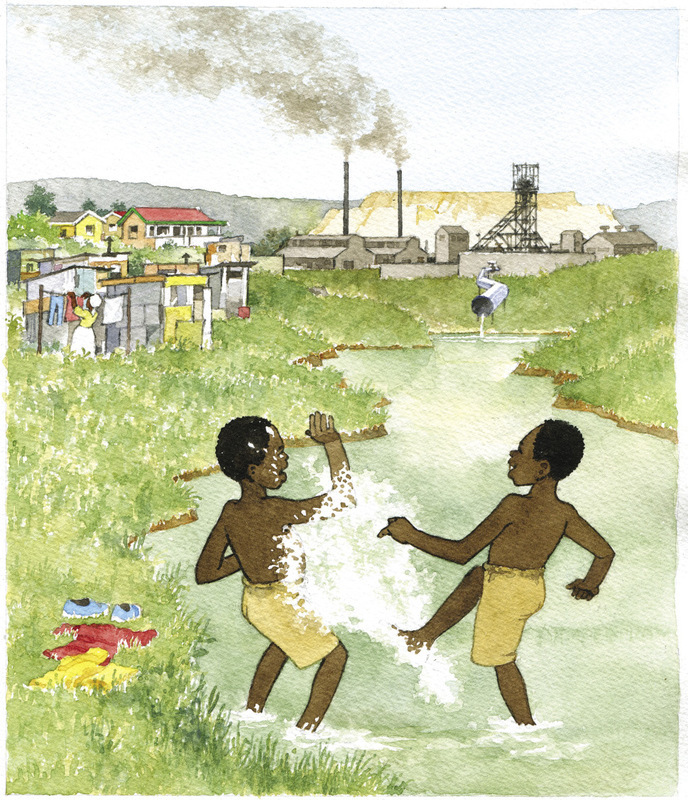
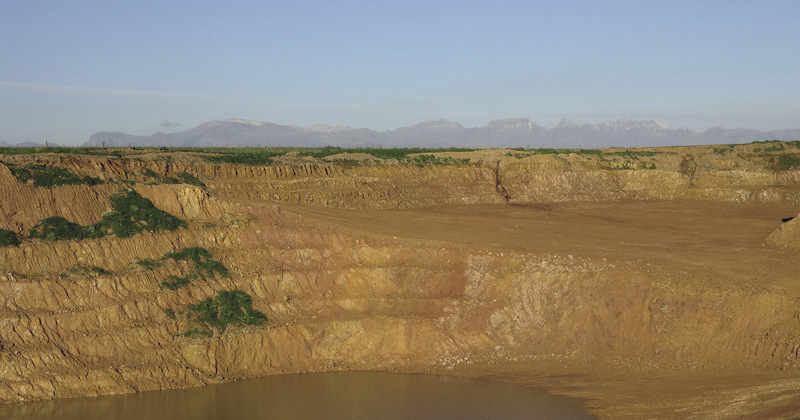
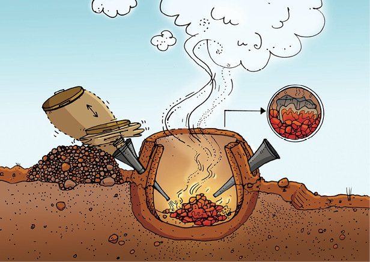

<div class="container">
  <div id="contents" class="col-md-12 main-content"><h1 xmlns="http://www.w3.org/1999/xhtml" id="toc-id-16">Investigate aspects of mining in south africa</h1>

    <p xmlns="http://www.w3.org/1999/xhtml" class="x--Body-opener">The mining industry is one of the
    most important contributors to the economy in South Africa. In
    this chapter, you will learn about the history of mining in
    South Africa, as well as the impact that mining has on
    communities, social life and the environment.</p>

    <p xmlns="http://www.w3.org/1999/xhtml" class="x--Body-opener">Four topics about mining are
    discussed in this chapter. You will work in teams, and each
    team will investigate only one of these topics, then give an
    oral report to the class on your topic. You will work in teams
    of three or four, and there must be at least one boy and one
    girl in each team.</p>

   
    <figure xmlns="http://www.w3.org/1999/xhtml"><figcaption>Figure 1: The
    oldest iron mine in the world - Lion Cave in
    Swaziland</figcaption></figure><h4 xmlns="http://www.w3.org/1999/xhtml">Notes to the teacher</h4>

    <p xmlns="http://www.w3.org/1999/xhtml" class="x--Body-opener">Learners will present their research
    on different topics <span class="char-style-override-6">as
    teams</span> in the last 60 minutes of the week. Ensure that
    teams are an appropriate size so that there will be at least
    four minutes for each team to present their research. This
    means that there cannot be more than 15 teams (15 × 4
    minutes = 60 minutes).</p>

    <p xmlns="http://www.w3.org/1999/xhtml" class="x--Body-opener">Different teams will present research
    on different topics. There are four different topics. Assign a
    topic to each team, rather than letting learners choose for
    themselves. Letting them choose would mean that learners will
    take time to make their choices (there is no time to waste time
    during this week's work), and might result in certain topics
    being left out or not presented properly.</p>

    <p xmlns="http://www.w3.org/1999/xhtml" class="x--Body-opener para-style-override-24"><b>5.1 Background information on different mining topics (30 minutes) </b></p>

    <p xmlns="http://www.w3.org/1999/xhtml" class="x--Body-opener">Learners should read and make
    summarising and comprehension notes on the topic they were
    assigned. This is individual work. Thirty minutes is not enough
    time to do this, which is why learners were given homework at
    the end of the previous chapter to read the articles on their
    assigned topic. <b>Important:</b> <span class="char-style-override-6">This means that you will have to assign
    topics to teams at the end of the previous week.</span></p>

    <p xmlns="http://www.w3.org/1999/xhtml" class="x--Body-opener">If you have access to the internet
    and/or books and/or video material, you should use this to make
    more information available to learners on the different topics.
    For example, you may make a list of appropriate websites to
    consult, or may make photocopies for learners of newspaper
    articles that have to do with the topics.</p>

    <p xmlns="http://www.w3.org/1999/xhtml" class="x--Body-opener para-style-override-24"><b>5.2 Team discussions and preparation of reports (30 minutes) </b></p>

    <p xmlns="http://www.w3.org/1999/xhtml" class="x--Body-opener para-style-override-39">Learners
    should work together in their teams to prepare their reports.
    Comprehesion questions are given to guide them through their
    topics.</p>

    <p xmlns="http://www.w3.org/1999/xhtml" class="x--Body-opener para-style-override-39">For homework,
    learners also have to read the articles on the other topics.
    This is crucial as teams will be required to ask questions of
    other teams after each presentation. Reading the articles on
    all the topics will ensure that the teams can ask informative
    questions.</p>

    <p xmlns="http://www.w3.org/1999/xhtml" class="x--Body-opener para-style-override-40"><b>5.3
    Presentation of reports</b></p>

    <p xmlns="http://www.w3.org/1999/xhtml" class="x--Body-opener para-style-override-39">Ensure that
    the teams adhere to the time limit for each presentation. Also
    allow time for the class to ask questions of each presenting
    team, which the team should answer.</p>

    <figure xmlns="http://www.w3.org/1999/xhtml"><figcaption>Figure 2</figcaption></figure><h2 xmlns="http://www.w3.org/1999/xhtml" id="toc-id-17">Background information on different mining topics</h2>

    <p xmlns="http://www.w3.org/1999/xhtml" class="x--Body-Text">Your teacher will divide your class
    into different teams, and tell each team which topic they need
    to investigate during this week. Each team will only
    investigate one of the following topics:</p>

    <ul xmlns="http://www.w3.org/1999/xhtml"><li class="x--Body-text-bullet">The impact of mining on the
      environment: Acid mine drainage</li>

      <li class="x--Body-text-bullet">The impact of mining on the
      environment: Dust pollution</li>

      <li class="x--Body-text-bullet">Indigenous mining in South
      Africa before the modern era</li>

      <li class="x--Body-text-bullet">The equality or inequality of
      job opportunities in mining for men and women</li>
    </ul><p xmlns="http://www.w3.org/1999/xhtml" class="x--Body-indent">In this lesson, you will work
    individually and read an article about the topic that your team
    will investigate. After reading the article, you should make
    notes in the space provided. Write down the points that you
    think are most important, as well as the points on which you
    would like to get more information. For homework, you should
    find out more about these topics, for example by looking in
    books, asking older people and looking on the internet.</p>

    <p xmlns="http://www.w3.org/1999/xhtml" class="x--Body-indent">The four different articles are given
    below. Remember that you should only read the one article that
    is about the topic your team will investigate.</p>

    <h3 xmlns="http://www.w3.org/1999/xhtml" class="x--Head-investigation-2-line">Topic a: the impact of mining on the environment: acid mine drainage</h3>

    <p xmlns="http://www.w3.org/1999/xhtml" class="x--Body-text-1-3">Mining is very important to South
    Africa. The mining industry has led to our country becoming
    very important as a provider of metals and <b>ores.</b> South Africa is one of the
    biggest producers of precious metals such as gold and platinum,
    and the country also has large amounts of iron, zinc, chrome
    and copper ore that are very important to many of our
    factories. Coal is also mined and this mineral provides the
    energy for many of our power stations.</p>

    <div xmlns="http://www.w3.org/1999/xhtml" class="aside">
      <p class="x--Body-box-no-indent">An <b>ore</b> is a type of rock that
      contains important minerals, including metals. These ores are
      mined and then refined to extract the valuable material.</p>
    </div>

    <p xmlns="http://www.w3.org/1999/xhtml" class="x--Body-indent">Because mining is such a large
    industry, it also provides employment for large numbers of
    people, both skilled and unskilled.</p>

    <p xmlns="http://www.w3.org/1999/xhtml" class="x--Body-indent">But, like any industry, it is also a
    cause of problems due to the way the ore is being mined. Before
    you investigate these problems, you need to understand a little
    about the mines themselves. Some mines are known as opencast or
    surface mines. These are mines where the workers do not have to
    go underground, but instead dig a very large hole to remove the
    ore after stripping off the surface material. These mines are
    easier to work on. Coal mines and iron-ore mines are often
    opencast mines, as coal and iron ore are closer to the surface
    than precious metal ores, such as gold.</p>

    <figure xmlns="http://www.w3.org/1999/xhtml"><figcaption>Figure 3: An opencast or surface mine. Note the water collecting in the hole.</figcaption></figure><p xmlns="http://www.w3.org/1999/xhtml" class="x--Body-indent-1-3 para-style-override-41">
    Underground mines are mines where shafts and tunnels have to be
    dug to reach the supply of ore that is being mined. All of
    South Africa's gold mines are underground mines, with shafts
    that are sometimes kilometres deep. The deepest mine in the
    world is the TauTona mine in Carletonville, South Africa: it is
    nearly four kilometres deep! Mining is dangerous work, and
    there are very strict safety precautions on all mines.</p>

    <figure xmlns="http://www.w3.org/1999/xhtml"><figcaption>Figure 4: The headgear of an
        underground mine. The shaft goes straight down into the
        ground under the wheels of the headgear, sometimes
        kilometres deep.</figcaption></figure><p xmlns="http://www.w3.org/1999/xhtml" class="x--Body-indent">One of the problems with mining is
    that eventually the ore, or metal, will run out. When this
    happens to a very big mine, what is left are many kilometres of
    underground tunnels. It is impossible to fill these tunnels
    because the ore that was mined has been processed to remove the
    valuable mineral. What happens normally is that the mine
    entrance is sealed and the tunnels are left as they were during
    mining. But they don't stay empty.</p>

    <p xmlns="http://www.w3.org/1999/xhtml" class="x--Body-indent-1-3">If you have ever dug a hole in
    the ground near a river, or on a beach, you will know that
    water soon starts gathering at the bottom. This happens when
    you have dug beyond the <b>water table.</b></p>
    <figure xmlns="http://www.w3.org/1999/xhtml"><figcaption>Figure 5: Holes dug in the ground
        often go below the water table, and then the hole fills
        with water.</figcaption></figure><div xmlns="http://www.w3.org/1999/xhtml" class="aside">
      <p class="x--Body-box-no-indent">The <b>water table</b> is the level in
      the ground where enough water is present to flow.</p>
    </div>

    <p xmlns="http://www.w3.org/1999/xhtml" class="x--Body-indent-1-3 para-style-override-4">All mines
    that are underground will be dug beyond the water table. While
    miners are working underground, large pumps are constantly
    pumping the water that gathers in the tunnels out of the mine.
    But once the mine is abandoned, the pumps are removed and the
    water starts to build up, exactly as it would in the hole you
    dug.</p>

    <p xmlns="http://www.w3.org/1999/xhtml" class="x--Body-indent-1-3 para-style-override-4">It would be
    fine if this water just filled the mine, but a <b>chemical reaction</b> occurs as the
    water drains through the rocks into the mine. The water reacts
    with chemicals in the ground that contained the ore, and turns
    into an acid. Acids can be very destructive in the wrong
    environment.</p>

    <div xmlns="http://www.w3.org/1999/xhtml" class="aside">
      <p class="x--Body-box-no-indent">A <b>chemical reaction</b> takes place
      when materials react with other chemicals and a change occurs
      to the molecules of the materials, forming new
      substances.</p>
    </div>
    <p xmlns="http://www.w3.org/1999/xhtml" class="x--Body-indent-1-3">You come across mild acids every
    day. Try this experiment:</p>

    <p xmlns="http://www.w3.org/1999/xhtml" class="x--Body-text-1-3">At home, pour yourself a glass of
    water, and then add one teaspoon of vinegar and stir. Take a
    sip. It is healthy, but for most people it tastes too strong,
    as if it is burning your mouth and throat.</p>

    <p xmlns="http://www.w3.org/1999/xhtml" class="x--Body-indent">Now pour yourself another glass of
    water. This time, add three teaspoons of vinegar to it and
    stir. Now drink a little bit from this glass as well. Could you
    taste the difference? Scientists would say that the first glass
    of water was slightly acidic, and that the second glass of
    water was more acidic.</p>


    <p xmlns="http://www.w3.org/1999/xhtml" class="x--Body-indent-1-3">The acid that is produced in
    mines is a lot stronger than your vinegar water! The water has
    mixed with sulphides and can eat away solid metals and stone.
    It is very poisonous to plants and animals.</p>

    <div xmlns="http://www.w3.org/1999/xhtml" class="aside">
      <p class="x--Body-box-no-indent">Acidic liquids are very
      corrosive. They can destroy solid materials.</p>
    </div>

    <p xmlns="http://www.w3.org/1999/xhtml" class="x--Body-indent">It would be less harmful if the acid
    water stayed in the mine, but due to many reasons the acidic
    liquid often leaks out. In some cases, the water level in the
    mine rises to the level of the surrounding water table, and
    then the acid pollutes all the water in that area. In other
    cases, the surface of the mine is higher than surrounding
    areas. Remember that most of the gold mines in Johannesburg
    were on a ridge. The acidic liquid will flow out of gaps in the
    rock like an ordinary spring, and pollute the rivers and
    streams it enters, killing fish, animals and plants.</p>

    <figure xmlns="http://www.w3.org/1999/xhtml"><figcaption>Figure 6: Acid mine drainage is ugly,
    poisonous and smells bad.</figcaption></figure><p xmlns="http://www.w3.org/1999/xhtml" class="x--Body-indent-1-3">When large mines, such as the
    gold mines in Gauteng, are closed, acid leaking from the mines
    can cause a lot of problems to the surrounding environment.
    These problems have to be solved before communities have to be
    removed to escape the effects.</p>

    <div xmlns="http://www.w3.org/1999/xhtml" class="aside">
      <p class="x--Body-box-no-indent">The gold mines in Gauteng
      are located on the Witwatersrand, or the "White Water Ridge".
      Rivers flow away from each side of this ridge, and are easily
      polluted.</p>
    </div>

    <figure xmlns="http://www.w3.org/1999/xhtml"><figcaption>Figure 7: This illustration shows how water in the water table can fill up mines when they aren't</figcaption></figure><p xmlns="http://www.w3.org/1999/xhtml" class="x--Body-Text para-style-override-15"><b>Notes: Acid mine drainage</b></p>
    <hr xmlns="http://www.w3.org/1999/xhtml"/><h3 xmlns="http://www.w3.org/1999/xhtml" class="x--Head-investigation-2-line">Topic b: the impact of mining on the environment: dust pollution</h3>

    <p xmlns="http://www.w3.org/1999/xhtml" class="x--Body-Text">Anyone who has been to Johannesburg
    will know the mountains of yellow and white sand that comes
    from the mines. These are called mine dumps. What are these
    dumps actually made of, and why do they exist?</p>

    <p xmlns="http://www.w3.org/1999/xhtml" class="x--Body-indent">Ore has to be crushed and then
    treated with chemicals before the metal in it can be dissolved.
    After this the chemical that contains the dissolved metal is
    separated from the waste material, then more chemicals are
    added and the metal is recovered. The metal is then melted and
    poured into large ingots, or bricks, of metal that can be
    transported to the factories that will use them.</p>

    <p xmlns="http://www.w3.org/1999/xhtml" class="x--Body-indent">But what remains? All the crushed ore
    and chemicals that have been used to extract the metal become
    waste material that has to be stored. It can't be put back into
    the mine since people are still working there, so it is either
    put into large dams, or piled in dumps. The waste material is
    normally a mixture of water, dissolved chemicals, and finely
    ground dust or small particles. This is called "slurry". The
    slurry has to dry in the open air. A ton of gold ore only
    produces a gram or two of gold, so a lot of slurry is left
    after extracting the gold.</p>

    <p xmlns="http://www.w3.org/1999/xhtml" class="x--Body-indent">Many of the chemicals added to
    extract gold are still in the slurry, and some of them are very
    poisonous, such as cyanide.</p>

    <p xmlns="http://www.w3.org/1999/xhtml" class="x--Body-indent">The compounds in the slurry are
    ground to fine sand. Once the water dries, it leaves a layer of
    tiny particles that can easily be blown around.</p>

    <p xmlns="http://www.w3.org/1999/xhtml" class="x--Body-indent">When gold mines in Johannesburg first
    started producing waste material, the slurry was pumped into
    storage dams. After a while, as the slurry dried and more waste
    material was produced, the dams grew upwards into dumps. The
    centre of these dumps was lower than the outside, so that more
    slurry could be pumped into the middle. The slurry was then
    pushed out towards the edges as it dried, leaving more space in
    the middle. These dumps grew into the huge mine dumps that line
    the mining areas of Johannesburg.</p>

    <p xmlns="http://www.w3.org/1999/xhtml" class="x--Body-indent">It is not just gold that produces
    mine dumps. However, since the old gold mine dumps in
    Johannesburg are so close to communities living there, it is a
    very noticeable problem. Other mining towns and cities have
    similar problems. When new mines start, people working at the
    mines often build houses nearby, and often a whole town
    develops around a mine.</p>

    <figure xmlns="http://www.w3.org/1999/xhtml"><figcaption>Figure 8: Dust blowing off mine dumps can affect people and the environment.</figcaption></figure><p xmlns="http://www.w3.org/1999/xhtml" class="x--Body-indent-1-3 para-style-override-16">In the
    early days of mining, the impact of mine dumps on the
    environment was not known. Once people became aware of the
    negative effects of the dust that comes off these mine dumps,
    they started looking for a solution to this problem. First,
    trees and grass were planted on the mine dumps to prevent the
    wind from blowing the dry dust into the towns.</p>

    <p xmlns="http://www.w3.org/1999/xhtml" class="x--Body-indent">But because of the toxic chemicals in
    the dumps, the trees and grass did not grow very well. Later,
    mining companies started to extract any remaining gold from the
    waste material in these mine dumps. Since the process used to
    extract gold a hundred years ago was not very effective, a lot
    of gold remained in the waste material. Once they processed
    these mine dumps to extract any remaining gold, they removed
    the dumps altogether. The remaining waste material was then
    stored where it could not be blown into nearby towns or
    cities.</p>

    <figure xmlns="http://www.w3.org/1999/xhtml"><figcaption>Figure 9: A mine dump planted with
        trees and grass to reduce dust pollution.</figcaption></figure><p xmlns="http://www.w3.org/1999/xhtml" class="x--Body-Text para-style-override-28"><b>Notes: Dust pollution from mine dumps</b></p>
    <hr xmlns="http://www.w3.org/1999/xhtml"/><h3 xmlns="http://www.w3.org/1999/xhtml" class="x--Head-investigation-2-line">Topic c: indigenous mining in south africa before the modern era</h3>

    <p xmlns="http://www.w3.org/1999/xhtml" class="x--Body-Text">The history of South Africa is closely
    linked to mining. Gold and diamond mining has generated much
    wealth for the country over the last 150 years. The mines in
    South Africa today produce gold, diamonds, silver, platinum,
    chromium and many other minerals. In 2010, South Africa
    produced 15% of the world's gold, and 78% of the world's
    platinum supply.</p>

    <p xmlns="http://www.w3.org/1999/xhtml" class="x--Body-indent-1-3">But of equal importance to our
    history was the ability to make iron tools and implements. This
    period is known as the Iron Age. The ability to <b>smelt</b> ore and make iron tools
    was discovered in North Africa. Some of these communities moved
    southwards to find better rainfall and more productive land to
    provide crops.</p>

    <div xmlns="http://www.w3.org/1999/xhtml" class="aside">
      <p class="x--Body-box-no-indent"><b>Smelting</b> is the process where
      ore is melted in a very hot oven called a "furnace", to
      separate the iron from the rest of the ore.</p>
    </div>

    <figure xmlns="http://www.w3.org/1999/xhtml"><figcaption>Figure 10: Locations of a few mining sites in South Africa during the Iron Age.</figcaption></figure><p xmlns="http://www.w3.org/1999/xhtml" class="x--Body-indent-1-3">About 1800 years ago, the areas
    where people coming from the north would settle in was
    influenced by the discovery of iron-ore deposits. Even <b>nomads</b> would settle near a
    source of iron ore and plant crops such as ground beans,
    sorghum and millet.</p> 
    <div xmlns="http://www.w3.org/1999/xhtml" class="aside">
      <p class="x--Body-box-no-indent"><b>Nomads</b> are people who have no
      fixed homes, and move from place to place in search of water
      and food.</p>
    </div>

    <p xmlns="http://www.w3.org/1999/xhtml" class="x--Body-indent">This would lead to an increase in
    cattle and other stock animals, and often the community would
    grow and prosper in that area. They would stop their nomadic
    lifestyle and stay in one place to build a community. However,
    sometimes they would have to move to a different area due to
    drought or poor soil. Other groups were not as fortunate to
    find deposits of iron ore, and so continued moving south as
    well. With these groups of people continually moving south, the
    knowledge of how to smelt iron came to the country that is now
    known as South Africa. Historians and geologists have found
    many places in our country where Iron Age settlers lived and
    built their smelting ovens. Studying these places has helped us
    to learn more about the history of these people.</p>

    <p xmlns="http://www.w3.org/1999/xhtml" class="x--Body-indent">The Iron Age people also knew how to
    make pottery by baking clay. The styles of pots and artwork
    found at these Iron Age sites have helped historians to
    determine the general date when these sites were occupied. The
    Iron Age people built huts and cattle kraals as well, and these
    ruins have been studied in places right across the country,
    from Mpumalanga to the Kei River.</p>

    <figure xmlns="http://www.w3.org/1999/xhtml"><figcaption>Figure 11: Typical Iron Age tools: simple but efficient</figcaption></figure><p xmlns="http://www.w3.org/1999/xhtml" class="x--Body-indent">Initially, iron-ore deposits were
    discovered by the Iron Age settlers as the deposits were
    exposed by soil erosion. Soon the settlers learnt how to find
    sources of iron ore by studying the different types of rock in
    the area and comparing it to other sites where they had found
    iron ore. About 1300 years ago, holes and shafts were being dug
    to produce the ore. A lot of trees were required near the
    iron-ore deposits, as the smelting process required a lot of
    charcoal to provide enough heat. A supply of fresh water was
    also important.</p>

    <p xmlns="http://www.w3.org/1999/xhtml" class="x--Body-indent">The process of smelting ore was
    regarded as a secret to be kept by the older men of the
    community. They would build a clay oven that had a small hole
    at the top as a chimney, and three or four other holes on the
    side where air could be blown in. To smelt the ore, it would be
    put into the oven in layers of ore and charcoal, then the
    charcoal would be set alight and a lid would be placed over the
    burning fire.</p>

    <figure xmlns="http://www.w3.org/1999/xhtml"><figcaption>Figure 12: Illustration of how an early iron smelter was constructed and used</figcaption></figure><p xmlns="http://www.w3.org/1999/xhtml" class="x--Body-indent">The men used "bellows" made of soft
    goat's or sheep's skin to continually blow air into the oven to
    create the high temperature needed to smelt the ore. This could
    take many hours, often a whole day or night. When the charcoal
    was finally burnt out, the oven would be opened and a lump of
    iron removed.</p>

    <p xmlns="http://www.w3.org/1999/xhtml" class="x--Body-indent">This lump would be heated over
    another fire and hammered into the shape of the tool or
    implement required. It was a difficult process, but it changed
    the way the people lived at that time, and so it is one of the
    most important eras in our history.</p>

    <p xmlns="http://www.w3.org/1999/xhtml" class="x--Body-Text"><b>Notes: Iron Age technology</b></p>
    <hr xmlns="http://www.w3.org/1999/xhtml"/><h3 xmlns="http://www.w3.org/1999/xhtml" class="x--Head-investigation-2-line">Topic d: the equality or inequality of job opportunities in mining for women and men</h3>

    <p xmlns="http://www.w3.org/1999/xhtml" class="x--Body-Text">Discrimination against women has been
    an ongoing struggle across the globe for centuries. Women were,
    and in some countries are still, mostly seen as second-class
    citizens under the control of their fathers, husbands or other
    male members of their family. Women were expected to stay at
    home, clean and cook for the family, and raise the children,
    often without any help from men. Very few women received a
    proper education or were allowed to work for money. Those who
    did work, mostly did only part-time jobs and for little money.
    They often got married and/or had children at a young age,
    before they could study to qualify for higher-paying jobs.</p>

    <p xmlns="http://www.w3.org/1999/xhtml" class="x--Body-indent">There were many women who fought hard
    for the rights of all women, including the right for women to
    vote in elections. In many countries, women were first allowed
    to vote only about 80 to 100 years ago, because many men
    thought women were not clever enough to vote. Many of the
    protesting women were put in jail and even mistreated for their
    actions.</p>

    <p xmlns="http://www.w3.org/1999/xhtml" class="x--Body-indent">For us to understand gender bias, we
    have to understand that it develops from a very young age.
    Girls are often taught that they cannot do what boys can, but
    is this the truth? For instance, boys play with toy cars and
    girls play with dolls. This often leads to the mistaken ideas
    people have about adult men and women. Many people still think
    that women are more emotional than men, have to be pretty, have
    to be willing to have children and have to care for their
    families. And many people still think that only men can be
    physically strong, that only men are clever and hard-working
    enough to do jobs with a lot of responsibility, that a real man
    does not show his emotions and that a husband has to only
    contribute financially to his family.</p>

    <p xmlns="http://www.w3.org/1999/xhtml" class="x--Body-indent">But what is gender bias in work
    situations? It is when one gender is perceived to be superior
    to another, and this gender is given more or better employment
    opportunities as a result. During the twentieth century, a lot
    of research was done on the physical and mental abilities of
    men and women, and it was proven that men and women are equally
    capable of doing most jobs. There have been changes in laws
    that prohibit discrimination on the basis of gender, and as a
    result the number of women in the workplace has increased
    rapidly.</p>

    <figure xmlns="http://www.w3.org/1999/xhtml"><figcaption>Figure 13: Men and women share duties above ground in modern mines.</figcaption></figure><p xmlns="http://www.w3.org/1999/xhtml" class="x--Body-indent">So, when you think of people working
    in mines deep underground, what picture comes to mind? You
    probably see a man, physically strong and holding a drill in a
    dark hot tunnel. Why do you not see a woman holding a big
    drill, deep in a hot dark tunnel?</p>

    <p xmlns="http://www.w3.org/1999/xhtml" class="x--Body-indent">Until the early 1990s, women in South
    Africa were prohibited from working in underground mines. As we
    said earlier, since 1994 there have been numerous changes to
    the laws in South Africa to reduce and remove gender and racial
    inequalities within different industries. The mining sector was
    one of them, but statistics show that gender equality is not
    happening as quickly as it should be. Even today, only 5% of
    mineworkers in South Africa are women, and the majority of
    these work in offices as clerks or administration officials.
    Very few women work directly with the physical extraction of
    minerals. There are, however, a lot of women involved in
    informal mining, such as extracting coal, clay, copper and
    other minerals for the sake of their own and their families'
    survival. This proves that women are physically capable of
    doing the job, even though they are not employed as physical
    workers.</p>

    <p xmlns="http://www.w3.org/1999/xhtml" class="x--Body-indent-1-3">These days anyone who wants to
    work underground can do so, but they have to pass a fitness
    test first. This test is not only for strength, but for stamina
    as well. Stamina refers to the ability to do physical work for
    a specific period of time without harming your body. In
    addition, the miners have to pass a <b>heat-tolerance test</b> and it has
    been discovered that women can handle high temperatures better
    than men!</p>

    <div xmlns="http://www.w3.org/1999/xhtml" class="aside">
      <p class="x--Body-box-no-indent">A <b>heat-tolerance test</b> is used to
      make sure that people can handle long periods working in high
      temperatures. The temperature in an underground mine is much
      hotter than at the surface.</p>
    </div>

    <figure xmlns="http://www.w3.org/1999/xhtml"><figcaption>Figure 14: Women and men can share underground work in mines.</figcaption></figure><p xmlns="http://www.w3.org/1999/xhtml" class="x--Body-indent">So it doesn't matter if you are a man
    or a woman, if you pass the test you can work underground,
    mining ore.</p>

    <p xmlns="http://www.w3.org/1999/xhtml" class="x--Body-indent">Another area where a bias has been
    noted is in the payment for work done. Although women are doing
    the same job as men, they are being paid less than their male
    counterparts. This practice is called wage discrimination, and
    there are also laws against this type of unfairness. However,
    because some women are desperate for work, they have no choice
    but to accept lower wages.</p>

    <p xmlns="http://www.w3.org/1999/xhtml" class="x--Body-indent">Apart from wage discrimination, there
    are many reasons why women are still not working in the formal
    mining sector to the same extent as men. For example:</p>

    <ul xmlns="http://www.w3.org/1999/xhtml"><li class="x--Body-text-bullet">low levels of training
      amongst women, specifically a lack of technical
      training,</li>

      <li class="x--Body-text-bullet">unsupportive work cultures in
      the mining sector, despite changes in law,</li>

      <li class="x--Body-text-bullet">a lack of mentorship and
      facilities,</li>

      <li class="x--Body-text-bullet">the physical nature of
      mining, and</li>

      <li class="x--Body-text-bullet">historical bias against women
      in the mining industry.</li>
    </ul><p xmlns="http://www.w3.org/1999/xhtml" class="x--Body-indent">For women to gain better access to
    careers in the mining industry, the perceptions that men and
    women have about this situation needs to change. Women have
    already proved that they are capable of doing the same work as
    their male counterparts, and therefore they should not only be
    allowed to do so, but they should also be rewarded and promoted
    by the same standards.</p>

    <p xmlns="http://www.w3.org/1999/xhtml" class="x--Body-Text"><b>Notes: Gender bias in mining</b></p>
    <hr xmlns="http://www.w3.org/1999/xhtml"/><h2 xmlns="http://www.w3.org/1999/xhtml" id="toc-id-18">Team discussions and preparation of reports</h2>

    <p xmlns="http://www.w3.org/1999/xhtml" class="x--Body-Text">After reading through each of the
    articles in the previous lesson, you were asked to make notes
    on what you understood to be the main problems or opportunities
    presented by the topic. You were also asked to find out more
    about each topic.</p>

    <p xmlns="http://www.w3.org/1999/xhtml" class="x--Body-indent">You will now work in your teams to
    prepare a report on the topic allocated to you. This report
    needs to consider the history and background of the topic. The
    reports must be informative and, when necessary, need to be
    investigative. For some of the topics, the team might have
    suggestions as to how problems can be solved or lessened. These
    suggestions will form an important part of the report.</p>

    <p xmlns="http://www.w3.org/1999/xhtml" class="x--Body-indent">Each team will give a short
    presentation to the class next week. You have this whole lesson
    to prepare. Each of you has to do a part of the
    presentation.</p>

    <p xmlns="http://www.w3.org/1999/xhtml" class="x--Body-indent">To help you prepare your report, some
    additional question are given below about the four different
    topics. Discuss the questions about your team's topic now.</p>

    <h3 xmlns="http://www.w3.org/1999/xhtml" class="x--Head-investigation-2-line">Topic a: the impact of mining on the environment: acid mine drainage</h3>

    <p xmlns="http://www.w3.org/1999/xhtml" class="x--Body-Text">You are not required to give solutions
    to acid drainage: these are very complicated and expensive
    processes! The purpose of this exercise is to understand how
    acid leaking from old mines can cause problems, and how
    communities can take precautions to not be affected by it.</p>

    <p xmlns="http://www.w3.org/1999/xhtml" class="x--Body-investigation-hanging">1. What is acid mine
    drainage?</p>
    <hr xmlns="http://www.w3.org/1999/xhtml"/><p xmlns="http://www.w3.org/1999/xhtml" class="x--Body-investigation-hanging">2. Why do you think it
    wasn't seen as a problem when the mines were started?</p>
    <hr xmlns="http://www.w3.org/1999/xhtml"/><p xmlns="http://www.w3.org/1999/xhtml" class="x--Body-investigation-hanging">3. What effect can
    acid mine drainage have on communities, water supplies, houses
    and other buildings, and on the environment?</p>
    <hr xmlns="http://www.w3.org/1999/xhtml"/><p xmlns="http://www.w3.org/1999/xhtml" class="x--Body-investigation-hanging">4. How can communities
    affected by acid mine drainage be assisted?</p>
    <hr xmlns="http://www.w3.org/1999/xhtml"/><p xmlns="http://www.w3.org/1999/xhtml" class="x--Body-investigation-hanging">5. Who should be
    investigating the problem, and who should be assisting with the
    solutions?</p>
    <hr xmlns="http://www.w3.org/1999/xhtml"/><p xmlns="http://www.w3.org/1999/xhtml" class="x--Body-investigation-hanging">6. What should the
    mining industry be doing to fix existing problems and prevent
    future problems?</p>
    <hr xmlns="http://www.w3.org/1999/xhtml"/><h3 xmlns="http://www.w3.org/1999/xhtml" class="x--Head-investigation-2-line">Topic b: the impact of mining on the environment: dust pollution</h3>

    <p xmlns="http://www.w3.org/1999/xhtml" class="x--Body-investigation-hanging">1. Give a short
    history of why there are so many mine dumps in South
    Africa.</p>
    <hr xmlns="http://www.w3.org/1999/xhtml"/><p xmlns="http://www.w3.org/1999/xhtml" class="x--Body-investigation-hanging">2. Why do towns
    develop around mines?</p>
    <hr xmlns="http://www.w3.org/1999/xhtml"/><p xmlns="http://www.w3.org/1999/xhtml" class="x--Body-investigation-hanging">3. How does dust
    blowing from mine dumps have a negative impact on people and
    the environment?</p>
    <hr xmlns="http://www.w3.org/1999/xhtml"/><p xmlns="http://www.w3.org/1999/xhtml" class="x--Body-investigation-hanging">4. Why is dust from
    mine dumps more dangerous than dust from fields?</p>
    <hr xmlns="http://www.w3.org/1999/xhtml"/><p xmlns="http://www.w3.org/1999/xhtml" class="x--Body-investigation-hanging">5. How can dust
    blowing from mine dumps be prevented?</p>
    <hr xmlns="http://www.w3.org/1999/xhtml"/><p xmlns="http://www.w3.org/1999/xhtml" class="x--Body-investigation-hanging">6. Why is the problem
    in Johannesburg reducing? Give a few reasons, and then make
    suggestions as to how you think other communities can learn
    from Johannesburg's experience.</p>
    <hr xmlns="http://www.w3.org/1999/xhtml"/><p xmlns="http://www.w3.org/1999/xhtml" class="x--Body-investigation-hanging">7. What other ideas
    does your team have to reduce the problem around the
    country?</p>
    <hr xmlns="http://www.w3.org/1999/xhtml"/><p xmlns="http://www.w3.org/1999/xhtml" class="x--Body-investigation-hanging">8. When new mines are
    dug in future, what plans should be made by the engineers to
    avoid problems with the mine dumps they produce?</p>
    <hr xmlns="http://www.w3.org/1999/xhtml"/><h3 xmlns="http://www.w3.org/1999/xhtml" class="x--Head-investigation-2-line">Topic c: indigenous mining in south africa before themodern era</h3>

    <p xmlns="http://www.w3.org/1999/xhtml" class="x--Body-investigation-hanging">1. Why is the history
    of early mining important to understand and study?</p>
    <hr xmlns="http://www.w3.org/1999/xhtml"/><p xmlns="http://www.w3.org/1999/xhtml" class="x--Body-investigation-hanging">2. Why did groups of
    people from North Africa move southwards?</p>
    <hr xmlns="http://www.w3.org/1999/xhtml"/><p xmlns="http://www.w3.org/1999/xhtml" class="x--Body-investigation-hanging">3. How important was
    mining as a skill to the migrating people?</p>
    <hr xmlns="http://www.w3.org/1999/xhtml"/><p xmlns="http://www.w3.org/1999/xhtml" class="x--Body-investigation-hanging">4. What resources
    would the migrating people look for? Why were these resources
    important?</p>
    <hr xmlns="http://www.w3.org/1999/xhtml"/><p xmlns="http://www.w3.org/1999/xhtml" class="x--Body-investigation-hanging">5. How do we know so
    much about the Iron Age settlers? What would you look for if
    you were searching for signs that they had lived at a specific
    place?</p>
    <hr xmlns="http://www.w3.org/1999/xhtml"/><p xmlns="http://www.w3.org/1999/xhtml" class="x--Body-investigation-hanging">6. How has mining
    affected the growth of South Africa?</p>
    <hr xmlns="http://www.w3.org/1999/xhtml"/><p xmlns="http://www.w3.org/1999/xhtml" class="x--Body-investigation-hanging">7. What does the
    future of mining look like?</p>
    <hr xmlns="http://www.w3.org/1999/xhtml"/><h3 xmlns="http://www.w3.org/1999/xhtml" class="x--Head-investigation-2-line">Topic d: the equality or inequality of job opportunities in mining for women and men</h3>

    <p xmlns="http://www.w3.org/1999/xhtml" class="x--Body-investigation-hanging">1. What is gender
    bias?</p>
    <hr xmlns="http://www.w3.org/1999/xhtml"/><p xmlns="http://www.w3.org/1999/xhtml" class="x--Body-investigation-hanging">2. Has it affected the
    growth of industry and commerce (business) in South Africa, and
    if so, how?</p>
    <hr xmlns="http://www.w3.org/1999/xhtml"/><p xmlns="http://www.w3.org/1999/xhtml" class="x--Body-investigation-hanging">3. <span>What has been
    done to change and get rid of gender bias in the mines of South
    Africa?</span></p>
    <hr xmlns="http://www.w3.org/1999/xhtml"/><p xmlns="http://www.w3.org/1999/xhtml" class="x--Body-investigation-hanging">4. Does your team
    think that the changes have been successful?</p>
    <hr xmlns="http://www.w3.org/1999/xhtml"/><p xmlns="http://www.w3.org/1999/xhtml" class="x--Body-investigation-hanging">5. What else can be
    done to reduce gender bias in mining and other areas in the
    workplace?</p>
    <hr xmlns="http://www.w3.org/1999/xhtml"/><h3 xmlns="http://www.w3.org/1999/xhtml">Homework: prepare to ask and answer questions</h3>

    <p xmlns="http://www.w3.org/1999/xhtml" class="x--Body-Text">Read through all four of the articles
    given in lesson 5.1, so that you know the background about the
    other three topics that other teams will talk about. You will
    ask the other teams questions after they have given their
    presentations. Make a few notes below to help you:</p>
    <hr xmlns="http://www.w3.org/1999/xhtml"/><h2 xmlns="http://www.w3.org/1999/xhtml" id="toc-id-19">Presentation of reports</h2>

    <p xmlns="http://www.w3.org/1999/xhtml" class="x--Body-Text">During the previous lesson, each team
    spent the lesson preparing an oral report on one of the mining
    topics. You were all asked to read the articles on the other
    three topics to enable you to ask questions on the other teams'
    topics.</p>

    <p xmlns="http://www.w3.org/1999/xhtml" class="x--Body-indent">Get together in your team first and
    spend five minutes revising your presentation. You will only
    have two minutes to do your presentation. You can use visual
    aids such as a poster to show the class what you mean.</p>

    <p xmlns="http://www.w3.org/1999/xhtml" class="x--Body-indent">Your teacher will then ask the teams
    in turn to make their presentations. Remember to ask the other
    teams questions after they have presented their topics. The
    idea is not to make them look bad, but to learn from them by
    asking those questions.</p>

    <figure xmlns="http://www.w3.org/1999/xhtml"><figcaption>Figure 15: A team giving a presentation to their class, using illustrations and a blackboard to help</figcaption></figure><h3 xmlns="http://www.w3.org/1999/xhtml">Homework: reflect on the weeks' work</h3>

    <p xmlns="http://www.w3.org/1999/xhtml" class="x--Body-investigation-hanging">1. What was your topic
    about?</p>
    <hr xmlns="http://www.w3.org/1999/xhtml"/><p xmlns="http://www.w3.org/1999/xhtml" class="x--Body-investigation-hanging">2. Compare advantages
    and disadvantages of the mining industry to South African
    society.</p>
    <hr xmlns="http://www.w3.org/1999/xhtml"/><p xmlns="http://www.w3.org/1999/xhtml" class="x--Body-investigation-hanging">3. What can be done to
    improve people's understanding of mining?</p>
    <hr xmlns="http://www.w3.org/1999/xhtml"/><p xmlns="http://www.w3.org/1999/xhtml" class="x--Body-investigation-hanging">4. What can be done to
    make mining more beneficial to society?</p>
    <hr xmlns="http://www.w3.org/1999/xhtml"/><h3 xmlns="http://www.w3.org/1999/xhtml">Next week</h3>

    <p xmlns="http://www.w3.org/1999/xhtml" class="x--Body-Text">Next week, you will start your Mini-PAT
    for this term. You will design and build a model of a lifting
    system for a mine. You will also prepare a tender for building
    the lifting system.</p>

  </div>
</div>